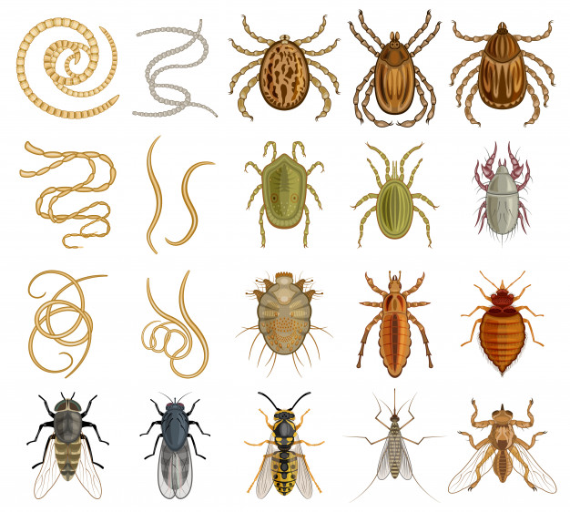

The infection with internal parasites is one of the most common diseases of the pets. It can be life-threatening as for Your pets, as for You. We have rich experience in the diagnostics, therapy and prophylaxis, as with more often met parasitoses, as with the exotic for our country ones. The most often used diagnostic methods are flotation /intestinal parasites /, Baermann’s technique, /pulmonary parasites /, serologic tests / heartworm disease, giardiasis, parasites in blood cells /.
Intestinal parasitoses – most common causative agents are tape- and roundworms. The members of these groups have complex life cycle with two or more hosts.
The tapeworms have long body, composed of several or numerous segments. They are popular also as “taenias” and inhabit the intestines of our pets, which are definitive hosts. The mild invasions are asymptomatic. The massive ones result in decreased, increased or perverted appetite, diarrhea, followed by constipation sometimes, weight loss, abdominal pain, seizures. The diagnosis in dogs and cats is done upon morphologic analysis of the segments, which are delivered in the feces. If You notice in the feces of your pet whitish objects, similar to a seed of cucumber, please consult Your vet.
From the tapeworms special attention has to be paid to hydatid worm. It is the smallest member of the dog taenias from 2.5 to 9 mm in length. Its body is composed of 3- 4 segments. The dogs are definitive hosts, as nearly always the infection is heavy. The infection of the definitive hosts is asymptomatic or the signs, if they occur, are typical for tapeworm infection. The life cycle is complex. The definitive hosts /dog / are infected by eating cyst-containing organs of intermediate hosts (ruminants, pig, equine, etc.). In 45-48 days in the small bowel the cysts develop into adult stages, which live there for 5- 6 months. The intermediate hosts, including humans become infected by ingestion of contaminated with eggs food and water. In intermediate host intestines, eggs hatch into oncosphere larvae that travel trough the blood to the different organs of the body – kidneys, liver, heart, brain, where hydatid cysts develop. One of the most important things in the care of your pet is exactly the regular worming of your dog. With it You guarantee proper and stable growth of your dog and of course prevent yourself from a heavy disease. Another common tapeworm infection of dog and cat is Dipillidium caninum infection. The length of the body is 30 – 40 cm. The dog is a definitive host (rarely humans, especially children), the fleas are intermediate. Worm your pets as for internal, as for external parasites.
Round worms are the largest group of parasites, infectious for stock and humans. They have filiform body, which vary from one millimeter to one meter in length. They are differentiated by the type of their eggs or larvae. For this purpose fresh feces are examined by the flotation method - it is looked for eggs and their type is evaluated. Most of the members are with one host life cycle, others have an intermediate host too. Some inhabit only the intestines, others migrate through body tissues, blood or lympha. Some members parasitize in lungs. Clinical signs of heavy intestinal infection include vomiting or diarrhea in the matter of which one can find living parasites. Also other signs are variable appetite - decreased, increased or perverted appetite, weakness, severe dehydration, which is a result of the diarrhea.
Some round worms parasitize in lungs, trachea or heart. The infection with them also can be asymptomatic or to include difficult breathing, cough, wheezing, restlessness. Diagnosis is made by examination of fresh feces in which by using different methods, eggs or larvae are found and differentiated.The hosts become infected by ingestion of contaminated with eggs food and water.
The hygiene is most important in the prophylaxis of these parasitoses. Worm your pets regularly, don’t run a risk their health!
Dirofilaria immitis is a parasitic roundworm, which inhabits heart and this is a disease which is diagnosed more often in our country now, although not typical before. Dirofilariasis affects dog, cat, horse, fox, etc. The mature worms are located in the lung arteries and right atrium, male and female mate and the females begin giving birth to live young, called microfilariae. Through the blood they come to the end points of the smallest vessels of the skin, from where after a bite they are ingested by the host – mainly mosquitoes. In the mosquito the microfilariae go trough several larval stages and after another bite they are inoculated in the subcutaneous tissues of the definitive host /dog, cat /.Here they remain up to six months???, since at certain stage they start to migrate to the heart, where they become mature, which in their turn give birth to microfilariae. The whole cycle lasts 8 – 10 weeks, but they reside in the heart as long as 3 – 5 years. The mature parasites are 17 – 27 cm. in length and cause serious disturbances in the blood stream, raise in the blood pressure and changes in right atrium, often with fatal consequences. Clinical signs vary – difficult breathing, exercise intolerance, weight loss, cough, embolism, ascites, jaundice, liver and kidney insufficiency, sudden death. The prophylaxis and early diagnosis is exclusively important for the fight with heartworm disease.
Blood parasitoses – the most common are ehrlichiosis and anaplasmosis, the causative agents of which, affect the different types of blood cells. Transmitters of these diseases are ticks and they affect dog, cat, a lot of wild and farm animals. The disease has acute and chronic form and the signs vary- fever, lack of appetite, petechial hemorrhages, enlarged lymph nodes and lien, anemia, subnormal platelet count, uveitis, retinal hemorrhages, polyarthritis. The prognosis for the acute form of the disease is in most cases good, in contrast to the chronic one which is with bad prognosis because secondary infections and hemorrhages occur which are hardly controlled. The diagnosis is based upon clinical signs and serologic tests.
Skin parasites - most common are infestation with fleas and ticks, two kinds of mange / demodicosis, sarcoptosis /, otodectosis / ear mange / and cheyletiellosis, also called “walking dandruff”.
Demodicosis is common mange. Usually the patients have several localized hairless spots, non pruritic and they are in good health condition. The diagnosis is attempted with skin scrapings, which are examined under microscope and numerous mature mites can be observed, as also different stages of their development-nymphs, larvae, eggs. It is believed that the disease has genetic predisposition –in one litter only one puppy can be infected, while others are not affected. Stress conditions like internal parasitoses, food of poor quality, therapy with immunosuppressive drugs or other transient ones like pregnancy, operations, estrus are considered predisposing factors for the manifestation of demodicosis in our pet. The disease is much more often in dogs than in cats.
A specimen of ear exudates are examined under microscope and the parasites which are found
are called otodectes. They live on the surface of the skin and in the ear canal. The disease is
typical for cats and dogs, but it affects mostly kittens, while mature cats are carriers usually.
The infestation with fleas and ticks is easy distinguished by the owners. The important thing here is
that it is not harmless. The fleas except causing irritation of the skin and allergies are transmitters
of tapeworms. The ticks also except causing local irritation of the skin are transmitters of dangerous
blood parasitoses. We recommend regular worming of Your pets.